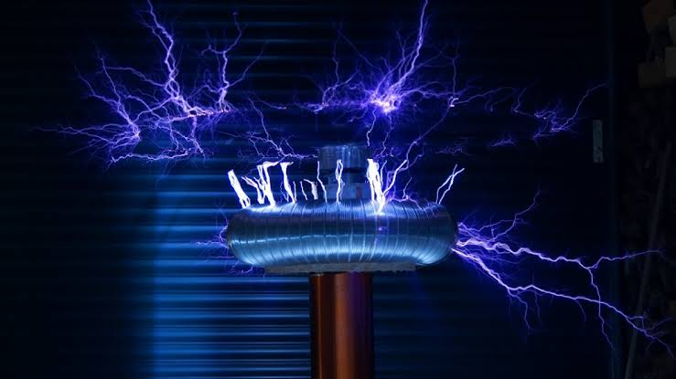

Cableado industrial
Instalación y organización de cableado para ambientes industriales y proyectos de mayor exigencia.
Desarrollamos instalaciones eléctricas para viviendas, oficinas, comercios e instalaciones industriales, buscando orden, seguridad y funcionalidad en cada trabajo.

Una instalación eléctrica debe responder a las necesidades reales de cada espacio. Por eso analizamos el proyecto antes de iniciar los trabajos.
Atendemos proyectos residenciales, comerciales e industriales, desde la instalación de puntos eléctricos hasta la implementación de tableros.
Nuestro objetivo es entregar un trabajo organizado, funcional y adecuado a las características del lugar.
Contamos con servicios eléctricos para diferentes tipos de proyectos y necesidades.
Instalación y organización de cableado para ambientes industriales y proyectos de mayor exigencia.
Implementación y mejora de tableros eléctricos para una distribución organizada de la energía.
Instalación de puntos eléctricos para casas, departamentos, oficinas y otros espacios.
Instalación de puntos de iluminación para interiores y exteriores.
Distribución e instalación de tomacorrientes según las necesidades del espacio.
Revisión y preparación de instalaciones eléctricas según las características del proyecto.
Desarrollamos trabajos eléctricos para instalaciones industriales, considerando la distribución, el orden y las necesidades de cada ambiente.

Trabajos eléctricos para casas, departamentos, oficinas y espacios residenciales.
Cableado para los diferentes puntos eléctricos de tu vivienda o proyecto.
Instalación de tableros eléctricos básicos para una distribución ordenada.
Instalaciones organizadas considerando la distribución y planificación del proyecto.
Instalación de puntos de iluminación para diferentes ambientes.
Distribución de tomacorrientes según el uso y características del espacio.
Adaptaciones, ampliaciones y mejoras para instalaciones existentes.
Coordinamos cada etapa para conocer las necesidades del proyecto y organizar correctamente los trabajos.
Revisamos el espacio, las necesidades y las condiciones iniciales del proyecto.
Organizamos los trabajos, materiales y actividades necesarias.
Realizamos las instalaciones y trabajos coordinados para el proyecto.
Revisamos el resultado final junto al cliente y coordinamos la entrega.
Cada proyecto requiere una solución adaptada a sus características.

Cuéntanos qué necesitas y coordinemos una cita para conocer mejor tu proyecto.